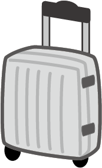

オーバーツーリズムについて

まるかわりまっぷ
項目ex）問題点、解決策、シミュレーションのURL等
オーバーツーリズムとは
オーバーツーリズムとは、過度な観光地化によって、地域住民の生活環境や観光客の観光体験に悪影響を与える状態のことを指します。（朝日新聞SDGs Activity!から引用）
（例）観光客の過度な増加により交通渋滞、公共交通機関の遅延。町の条例違反によるごみの不法投棄や地域住民とのトラブルの増加など
（例）観光客の過度な増加により交通渋滞、公共交通機関の遅延。町の条例違反によるごみの不法投棄や地域住民とのトラブルの増加など
オーバーツーリズムの事例 In KYOTO
①京都市在住の女性（３９）は「古民家を背景に撮影しようと、無断で敷地内に立ち入る人がいる」と英語表記の「撮影禁止」の看板を設置
②高台寺塔頭 ・ 岡林院 は昨年９月、石橋の欄干の一部を壊される被害に遭った。頭上のモミジをカメラに収めようと橋に寄りかかる観光客が相次いだことが原因とみられ、親柱の一部も倒れた。
(上記二つは読売新聞オンラインから引用)
②高台寺塔頭 ・ 岡林院 は昨年９月、石橋の欄干の一部を壊される被害に遭った。頭上のモミジをカメラに収めようと橋に寄りかかる観光客が相次いだことが原因とみられ、親柱の一部も倒れた。
(上記二つは読売新聞オンラインから引用)